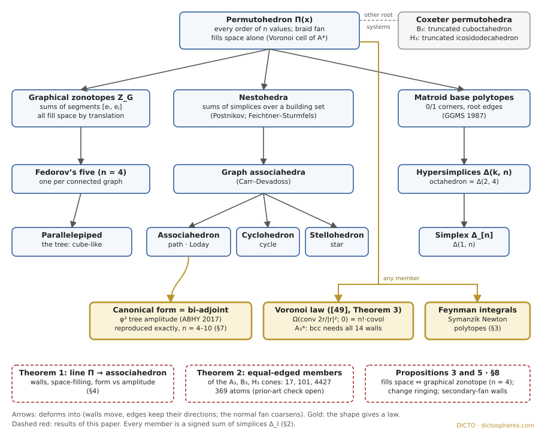

Generalized permutohedra from the crystal to the law: the line from the permutohedron to the associahedron, every equal-edged member of three Coxeter cones, which members fill space, and where the family meets physical laws
View in app: Generalized Permutohedra
gperm, read from the local feature branch gperm-world, not yet committed there) goes live only after it ships through the deploy queue; until then ?open=gperm opens nothing. Check the key again when the world is committed.
Write the numbers 1, 2, 3, 4 in every possible order: there are 24 orders. Make each order a point in space and join two orders that differ by swapping two neighbouring numbers. The 24 points are the corners of the truncated octahedron, Kelvin's cell, which packs space with no gaps. This solid of all orders is the permutohedron, and it exists in every dimension. DICTO has been retelling much of his earlier work through it (the Permutohedron Paradigm): the truncated triangle is the permutohedron of three values, the golden bond slider is a walk through permutohedra of four values, and the 4D Vacuus sits at the heart of the permutohedron of five [47].
Now keep every wall of the permutohedron facing the same way and slide the walls in or out. Some edges shrink and vanish, but no edge ever turns. Everything that can be made this way is the permutohedron's family. It is large: the simplex, the octahedron, the cube-like parallelepipeds, and the associahedron, the solid whose corners are the ways to bracket a product, all belong to it. In 2017 Arkani-Hamed, Bai, He and Yan found that a version of the associahedron carries a law of particle physics: a function read off its walls, its canonical form, is exactly the tree-level scattering amplitude of a simple model [23]. So the family runs from a crystal cell at one end to a shape that hands out a law at the other. DICTO set out to walk that road: one slider from the permutohedron to the associahedron, with the walls where the shape changes, the stops of the family on the way, and a mark that shows whether the shape still fills space. The app world "Generalized Permutohedra" is that slider (§4); this paper is its record.
Permutohedron [1, 40]. For real values x1 < … < xn, Π(x) is the convex hull of all n! points obtained by permuting the coordinates of (x1, …, xn) in ℝn. It lies in a hyperplane Σ yi = const, has dimension n − 1, n! corners and 2n − 2 facets, one for each nonempty proper subset S of [n] = {1, …, n}. Its edges are parallel to the roots ei − ej. Its normal fan is the braid fan, cut out by the hyperplanes yi = yj. The standard permutohedron Πn takes x = (1, …, n).
Generalized permutohedron [1, Def. 6.1; 2, Prop. 3.2]. A polytope obtained from a permutohedron by moving its facets parallel to themselves, edges allowed to shrink to points but keeping their directions. Equivalently (PRW [2, Prop. 3.2]): a polytope whose normal fan is coarsened by the braid fan, or a Minkowski summand of a permutohedron. Every such polytope is P(z) = {y ∈ ℝn : Σi∈[n] yi = z[n], Σi∈S yi ≥ zS for all S}, with the heights z in a polyhedral cone, the deformation cone. Its points are the submodular functions z (zS∪T + zS∩T ≥ zS + zT in the convention for which the inequalities above are tight; the link between generalized permutohedra, polymatroids and submodular functions goes back to Edmonds [6] and is stated in this form in [8, 11]). Modulo translations the cone has dimension 2n − n − 1 (11 for n = 4).
Sums of simplices [1, Prop. 6.3]. For I ⊆ [n] let ΔI = conv{ei : i ∈ I}. For yI ≥ 0 the Minkowski sum Σ yI ΔI is a generalized permutohedron with zS = ΣJ⊆S yJ. By Möbius inversion every z determines unique numbers yI = ΣJ⊆I (−1)|I∖J| zJ, which may be negative (a signed sum). The standard permutohedron is Σi<j Δ{i,j} up to translation, a sum of segments; Loday's associahedron is Σi≤j Δ[i,j], the sum over intervals [1, Cor. 8.2]; the simplex Δ[n] is itself a member.
The members named here. Graphical zonotopes ZG = Σij∈E(G) cijΔ{i,j} (cij > 0) for a graph G on [n]; these are exactly the members that are zonotopes [2, Prop. 5.1]. Nestohedra ΣI∈B ΔI over a building set B [1, §7; 5]; graph associahedra are the nestohedra of the connected subsets of a graph [1, §8.4; 4]: the path gives the associahedron [3, 37], the cycle the cyclohedron [1, §8.3; 38], the star the stellohedron, the complete graph the permutohedron. Hypersimplices Δ(k, n), the 0/1 points with k ones (Δ(1, n) the simplex; Δ(2, 4) the octahedron), and more generally matroid base polytopes [7]. Faces of members are products of members (Aguiar and Ardila [9], where the family is a Hopf monoid).
Coxeter versions [8]. Replacing the braid fan by the fan of the mirrors of a finite reflection group gives Coxeter permutohedra and their deformation cones; in three dimensions the B3 permutohedron is the truncated cuboctahedron and the H3 one the truncated icosidodecahedron. Type cones: for any complete fan, the realisations with that normal fan form an open cone (McMullen [10]); its closure is the deformation cone; type cones of the associahedron's and nestohedra's fans are described in [11, 12], of permutree fans in [13], and shard polytopes in [14].
Fibre and secondary polytopes [15, 16]. The secondary polytope of a point configuration has one corner per regular triangulation; for a convex polygon it is the associahedron. The fibre polytope of the cube over a segment (its monotone paths) is a permutohedron [15]. The secondary fan, the normal fan of the secondary polytope, cuts the space of heights into chambers, one per regular subdivision.
Space-filling by translation. A convex polytope fills space with translated copies exactly when it is centrally symmetric, its facets are centrally symmetric and each belt (the facets containing a translate of a given codimension-2 face) has 4 or 6 facets (Venkov 1954, McMullen 1980 [19]). Such a polytope is a parallelohedron; in three dimensions there are Fedorov's five [21]. The permutohedron Πn is the Voronoi cell of the lattice An−1* (Conway and Sloane [17]).
Canonical form [24]. A convex polytope P is a positive geometry; its canonical form Ω(P; Y) is the rational function with simple poles exactly on the facet planes whose residues are the facets' forms. For Y inside P, Ω(P; Y) = d!·vol((P − Y)°), the volume of the polar about Y [24, eq. (7.174)]. The bi-adjoint scalar amplitude mn = Σ over planar cubic trees of ∏ 1/X over the tree's propagators [23].
Labels. Proved: a proof is given here or in the cited source. Exact: computed in exact rational or algebraic arithmetic, with the checks named. Reading: a statement that places a known or published result in the language of this family, with the short argument given. Numerical: floating point.
Figure 1 is the family tree: each arrow means "deforms into" (walls move, edges keep their directions, some edges shrink to points), and gold boxes mark where a member is known to hand out a law. The shape at the top contains all others as degenerations; the associahedron, cyclohedron and stellohedron sit side by side as graph associahedra of the path, the cycle and the star.

Laws known in the literature (credited, not claimed):
The lattice end. Because the permutohedron is a Voronoi cell, the canonical form of its polar at the centre is a counting law: for every lattice L ⊂ ℝd with Voronoi-relevant vectors r, Ω(conv{2r/|r|²}; 0) = d!·covol(L) (Theorem 3(i) of the draft Geometry Gives Laws [49]; the polar of conv{2r/|r|²} is the Voronoi cell, by Voronoi's description of it [18]). For A3* (the body-centred cubic lattice, Voronoi cell the truncated octahedron) the exact chain in [49] found the instructive failure: the 8 shortest vectors alone give 9/16 instead of the covolume 1/2; with all 14 relevant vectors (the 6 square walls included) the value is 1/2 (exact; study 2026-11-12-e8-canonical, negative control). So at the crystal end the family's top member reads off the density of its lattice, and at the associahedron end a member reads off an amplitude. Theorem 1 follows the line between them.
Walk in a straight line through the cone, from the permutohedron to Loday's associahedron: the walls that the two share stay put and the others slide outward until they vanish. The theorem says what the solid is at every point of the walk, where it can and cannot fill space, and what its canonical form is.
Set-up (study 2026-11-12-permutohedron-associahedron-line, gp_line.py). In ℝn, Π = Σi<jΔ{i,j} shifted to the values 1, …, n (zΠ(S) = C(|S| + 1, 2)) and L = Loday's associahedron (zL(S) = the number of intervals inside S). The Postnikov line is P(t) = P((1 − t)zΠ + t zL), t ∈ [0, 1]. The heights of interval facets agree at both ends, so only the non-interval facets move, each outward at its own speed zΠ(S) − zL(S). The study also runs an equal-speed line, a line to the ABHY associahedron of [23] written as a member, and a control line from Π to the cube (graphical zonotopes of Kn to the path), which must fill space all along.
Theorem 1 (main theorem: the road from the crystal to the law). Let P(t) = (1 − t)Π + tL be the Postnikov line in ℝn, n ≥ 3, and let DS = zΠ(S) − zL(S) for each non-interval S.
(i) Proved, every n. For 0 ≤ t < 1, P(t) has the permutohedron's labelled face lattice; at t = 1 all non-interval facets, 2n − 2 − (C(n + 1, 2) − 1) of them, vanish together (5 in 3D, 16 in 4D). The same holds on the line to the ABHY associahedron. Exact, n = 4, 5: f-vectors (24, 36, 14) → (14, 21, 9) and (120, 240, 150, 30) → (42, 84, 56, 14); in 4D the facet 135 shrinks to an edge, as (1 − t)²(3t + 1), every other non-interval facet linearly.
(ii) Proved, every n. P(t) fills space by translations only at t = 0: for 0 < t ≤ 1 it is not even centrally symmetric.
(iii) On the equal-speed line zS(s) = zΠ(S) − s (every non-interval facet moved at the same speed; interval facets fixed), DS = Σb<b′ kbkb′, where kb are the lengths of the blocks (maximal intervals) of S. Proved, every n: the formula for DS, and facet S is gone by s = DS. Exact, n = 4, 5: facet S is present for every s < DS, so it vanishes exactly at s = DS; the walls are s = 1, 2 (3D) and s = 1, 2, 3, 4 (4D), with f-vectors (24, 36, 14) → (18, 27, 11) → (14, 21, 9) and (120, 240, 150, 30) → (82, 166, 108, 24) → (58, 118, 78, 18) → (46, 92, 61, 15) → (42, 84, 56, 14). Conjecture 1: for every n, facet S of the equal-speed line vanishes exactly at s = DS.
(iv) Exact, n = 4, 5 (rational arithmetic; Y = the permutohedron's centre). The canonical form at the centre is one rational function of t, falling from Ω(Π) to the amplitude:
| n | Ω(P(t); Y) | t = 0 | t = 1 |
|---|---|---|---|
| 4 (3D) | 8(8t² + 33t + 36) / (9(t + 2)(4t + 3)) | 16/3 | 88/27 = m6 |
| 5 (4D) | 2(8t⁵ + 74t⁴ + 264t³ + 447t² + 342t + 90) / (3(t + 1)(t + 3)(2t + 1)(2t + 3)(3t + 2)) | 10/3 | 49/36 = m7 |
Table 1. The canonical form at the centre along the Postnikov line (exact).
Proved, every n (given [23]): Ω(L; Y) = mn+2 with X = the slacks of Loday's facets at Y, because Loday's heights satisfy the ABHY mesh relations with every constant c = 1. On the ABHY line the end value is the ABHY amplitude itself (exact, n = 4, 5). Exact, n = 4, 5: Ω(Π; Y) = 2n−1n/(n − 1)!; Conjecture 2: this value for every n.
Proof of (i). The normal fan of a Minkowski sum is the common refinement of the summands' fans. The braid fan refines the fan of every generalized permutohedron [2, Prop. 3.2], in particular L's, so for 0 < t < 1 the fan of (1 − t)Π + tL is the braid fan and the labelled face lattice is the permutohedron's. At t = 1 the fan is L's, whose facets are the interval facets [1, §8.2], so every non-interval facet goes at once. The ABHY associahedron has the same normal fan as L, so the argument repeats. In type-cone language [11, 12]: the open line lies inside the type cone of the braid fan and ends on the face that is the type cone of L's fan. ∎
Proof of (ii). Let z(t) = (1 − t)zΠ + t zL; these heights are tight for every S, since support functions add under Minkowski sums. P(z) is centrally symmetric about a point c exactly when zS + (z[n] − z[n]∖S) = 2Σi∈S ci for every S (the lowest and highest values of ΣS x are symmetric about c), a system linear in (z, c). Since z(t) is affine in t, the set of t at which it can be solved is an affine subset of [0, 1]: empty, a point or everything. It contains t = 0 (Π is symmetric) and not t = 1 (L is a pentagon for n = 3 and has pentagonal 2-faces for n ≥ 4, so it is not centrally symmetric). So it is {0}. A polytope that fills space by translations is centrally symmetric [19]. ∎ The Corollary below gives a second route for n = 4.
Proof of (iii), the proved part. zΠ(S) = 1 + … + |S| = C(K + 1, 2) with K = Σ kb, and zL(S) counts the intervals inside S, each inside a single block: Σ C(kb + 1, 2). The difference is Σb<b′ kbkb′. At s = DS the height of S is zL(S) = Σb z(b), so the inequality ΣS x ≥ zS is the sum of the block inequalities Σb x ≥ z(b), interval facets whose heights never move; it holds with equality only on the intersection of at least two of them, a face of lower dimension, so S is no longer a facet. That S is still a facet for every s < DS is the exact check for n = 4, 5 (Conjecture 1 beyond). ∎
Proof of the mesh relations in (iv). Write X[a,b] = Σi∈[a,b] xi − C(b − a + 2, 2) for Loday's interval facets. In X[a,b] + X[a+1,b+1] − X[a,b+1] − X[a+1,b] the variables cancel and the constants give C(k + 2, 2) + C(k, 2) − 2C(k + 1, 2) = 1 (k = b − a + 1): every mesh constant is 1, the ABHY slice with c ≡ 1, and [23] gives Ω(L) = mn+2. ∎ The study confirms Ω = mn+2 exactly at Y for n = 4, 5, with a tree-dropped amplitude as negative control, and computes every form by two formulas (pulling triangulation, Warren).
What the theorem says. On the straight road the solid keeps the permutohedron's shape until the very last moment, when all its extra faces disappear at once; it stops filling space at its first step; and its form slides smoothly down to the amplitude. On the equal-speed road the extra faces leave in stages, each when its own gap DS has closed. The study's control line from Π to the cube (graphical zonotopes) fills space all along, so the test is not simply rejecting every moved shape. Prior art (study README, 12 November 2026): the combinatorial passage from the permutohedron to the associahedron by deleting facets is known (removahedra and permutreehedra: Pilaud and Pons [53]; Hohlweg and Lange), and the permutohedron's canonical form as a sum over orders is known [24]; no source was found that follows this line in the deformation cone and records its walls, its loss of tiling or its form.
In the app. The world "Generalized Permutohedra" takes a staged route through the same cone (DICTO's choice): its main slider removes the non-interval faces one at a time, each stage one face fewer, from the permutohedron to Loday's associahedron; the stops (simplex, cube, hypersimplex, cyclohedron, associahedron, permutohedron) are taps, and the badge runs the translation test of Proposition 3 on the shape drawn. The straight line and the equal-speed line of Theorem 1 are the exact references for its two ends and the order in which faces leave.
Corollary (of Proposition 3; proved). For n = 4, the member P(t) fills space by translations at t = 0 and for no t in (0, 1]. In every dimension, P(t) is not a zonotope for t > 0.
Proof. By Möbius inversion (§2) the y-coordinates of P(t) are (1 − t)yΠ + t yL, since z is linear in t and y is linear in z. Here yΠ is 1 on pairs and 0 elsewhere, and yL is 1 on intervals, so y[i,i+2](t) = t ≠ 0 for t > 0. A zonotope member is a graphical zonotope [2, Prop. 5.1], whose y vanishes off pairs; so P(t) is not a zonotope. For n = 4, Proposition 3 then says P(t) does not fill space by translations. ∎
Inside the families of the three great Archimedean solids, which members have all edges of one length? There are only finitely many, they can be listed exactly, and most of them are new.
Paper #49 (The Polyhedral Stretching Theorem [43]) proves that sliding an equal-edged solid by one edge length along an edge direction gives an equal-edged solid, and left open which stretches of the Archimedean solids exist. The truncated octahedron, truncated cuboctahedron and truncated icosidodecahedron are the A3, B3 and H3 permutohedra, so their deformation cones [1, 8] contain every such stretch along a root direction.
Theorem 2 (exact; study 2026-11-12-permutohedron-equal-edges). (i) On the closed cone every edge length is a linear form in the cone parameters, carried on the walls of the Coxeter fan: an edge of a member is a union of walls, every wall in it carries that edge's length and all other walls carry 0. So "all edges of length 1" is the system ℓw(ℓw − 1) = 0 on every wall w, and its solutions are the 0/1 wall labellings that close round every face. (ii) Up to symmetry the equal-edged solids are:
| A3 (truncated octahedron) | B3 (truncated cuboctahedron) | H3 (truncated icosidodecahedron) | |
|---|---|---|---|
| cone dimension (modulo translation) | 11 | 23 | 59 |
| equal-edged members (all positions up to translation) | 162 | 1296 | 390 970 |
| of which solids | 128 | 1223 | 390 711 |
| solids up to symmetry | 17 | 101 | 4427 |
| regular-faced | 7 | 18 | 23 |
| zonohedra | 5 | 43 | 675 |
| stretches of a Platonic or Archimedean solid | 0 | 8 | 0 |
| other #49 stretches (a segment summand) | 3 | 32 | 3137 |
| #49 caps (a triangle or tetrahedron summand) | 0 | 0 | 158 |
| pentagon caps | – | – | 13 |
| atoms (no equal-edged summand, not regular-faced) | 2 | 2 (the same two) | 367 |
| sums of atoms (no segment, polygon or tetrahedron summand) | 0 | 0 | 54 |
Table 2. Equal-edged members of the three cones (exact). B3: 103 orbits are 101 solids, two pairs being proved congruent.
(iii) Exact (read off the complete list, with the reason). Within these cones the only Platonic or Archimedean solids that can be stretched along a cone direction are the tetrahedron, octahedron, cuboctahedron, truncated tetrahedron and truncated octahedron, each in B3 along the cube axes; no H3 solid can. Every other Platonic or Archimedean solid of these groups has an edge along every root direction of its cone, so any root-direction stretch doubles an edge. (iv) Proved. For equal-edged members P, P′ of one cone, P ⊕ P′ is equal-edged exactly when no wall of the fan carries an edge of both.
Proof of (i) and (iv). The face of a member in a direction u inside a wall w is an edge parallel to w's root or a point; its length ℓw is linear in the support function, hence in the cone parameters, and faces of Minkowski sums are sums of faces, so ℓw(P ⊕ P′) = ℓw(P) + ℓw(P′). An edge of a member spans every wall whose direction it serves, all with its length. If P and P′ are equal-edged, each ℓw is 0 or 1, and the sum is 0 or 1 on every wall exactly when no wall has 1 in both. (The hypothesis that P and P′ are equal-edged is needed: Q = ½Q ⊕ ½Q.) The enumeration in (ii) is a complete search of the closed 0/1 labellings, one representative per orbit under the 48 or 120 symmetries, every representative rebuilt exactly over ℚ(√2) or ℚ(√5) with every edge of squared length exactly 1 and Euler's formula checked (setup 46/46, analysis 50/50 checks; all seven Wythoff solids of each group found and named; #49's own shapes found; negative controls: the cube in A3, the rhombic dodecahedron in B3 and #49's five-fold dodecahedron stretch in H3 fail the cone inequalities). ∎
| core | +1 axis | +2 axes | +3 axes |
|---|---|---|---|
| tetrahedron | 4 triangles, 4 rhombi 45°/135° (8 corners) | 4 triangles, 4 rhombi, 2 hexagons 90°/135° (12) | 4 triangles, 6 hexagons 90°/135° (16) |
| octahedron | J15 | J28, square orthobicupola | rhombicuboctahedron |
| cuboctahedron | 8 triangles, 2 squares, 4 hexagons (16) | 8 triangles, 4 hexagons, 2 regular octagons (20) | truncated cube |
| truncated tetrahedron | 20 corners | 28 corners | 4 triangles, 12 squares, 6 hexagons 90°/135°, 4 regular hexagons (36) |
| truncated octahedron | zonohedron, 32 corners | zonohedron, 40 corners | truncated cuboctahedron |
Table 3. The stretches of Platonic and Archimedean solids within the three cones, all in B3 along the cube axes (exact).
The atoms. In A3 (= B3) the two atoms are the octahedron with a tetrahedron on one face (4 triangles, 3 rhombi 60°/120°, 7 corners; the 60° rhombohedron with one corner cut, a known shape) and a 13-corner solid on the octet lattice (4 triangles, 4 rhombi 60°/120°, 5 squares, 24 edges) that we did not find named. In H3 there are 367 atoms, mostly with regular triangles and pentagons together with rhombi of 36°/144°, 60°/120° and 72°/108° and hexagons of 72°/144° and 108°/144°. Novelty: no listing of equal-edged members of these cones was found in the sources checked (Appendix A); the one source still to check is Subbotin's enumeration of convex RR-polyhedra [52], whose faces are rhombic stars and regular polygons and which may contain some H3 atoms. Until it is checked the atoms are claimed as computed, not as new.
A solid fills space by sliding copies of itself only if it is balanced about its centre and so are its faces. Inside the permutohedron's family in three dimensions that leaves exactly the solids built from edges alone, one for each way of joining four dots into a connected network, and these are the five classical space-filling solids.
Proposition 3 (proved). (i) For every graph G on [n], every graphical zonotope ZG = Σ cijΔ{i,j} (cij > 0) of full dimension fills its hyperplane by translations, whatever the lengths cij. (ii) For n = 4, a full-dimensional generalized permutohedron fills space by translations exactly when it is a graphical zonotope ZG of a connected graph G on four vertices, and the five such graphs give Fedorov's five parallelohedra (Figure 2): a tree the parallelepiped, the 4-cycle the rhombic dodecahedron, a triangle with a pendant edge the hexagonal prism, K4 minus an edge the elongated dodecahedron, and K4 the truncated octahedron.
Proof. (i) A zonotope is centrally symmetric with centrally symmetric faces. Its belts correspond to the flats F of rank d − 2 of its generator directions; the belt has 2k facets, where k is the number of distinct directions in the rank-2 contraction by F. For graph directions ei − ej the contraction is again graphic and of rank 2, and a graphic matroid of rank 2 has at most three parallel classes (a simple graph of rank 2 has at most three edges, a triangle); so every belt has 4 or 6 facets, and Venkov–McMullen [19] gives a translation tiling. Only directions enter, so the lengths cij are free. (ii) If a three-dimensional member tiles by translations, its facets are centrally symmetric [19]; a 3-polytope all of whose faces are centrally symmetric is a zonohedron (classical; Coxeter [22, §2.8]); a zonotope member is a graphical zonotope [2, Prop. 5.1], and full dimension needs G connected and spanning. Conversely (i). The five connected graphs on four vertices have 3, 4, 4, 5 and 6 edges; their zonotopes have 6, 12, 8, 12 and 14 faces: three parallelogram pairs; six rhombus pairs; one hexagon pair from the triangle and three parallelogram pairs; two hexagon pairs and four parallelogram pairs; four hexagon pairs and three square pairs; these are the face counts of Fedorov's five. ∎
Remarks. The associahedron (n ≥ 4) has pentagonal faces, which are not centrally symmetric, so it never fills space by translations; for n = 4 the DICTO 1:2 Truncated Octahedron, the permutohedron of −2, −1, 1, 2 [47, Theorem 4], has hexagons with sides 1 and 2 in turn and also fails, although it fills space together with its partner, the DICTO 2:1 [47, §5]. So "fills space" in the app world means the translation test of Proposition 3; tilings by two kinds or by turned copies are outside it. The study's control line from Π to the cube (graphical zonotopes of Kn → the path) tests (i) at every station.
Before trusting our tools on the line we checked that they give the right answer at the one end where the law is known.
Proposition 4 (exact; the theorem is Arkani-Hamed, Bai, He and Yan's [23], the check and code are ours; study 2026-11-12-abhy-associahedron). For n = 4, …, 10 (dimension 1 to 7) the kinematic associahedron cut out by the ABHY slice sa,b = −ca,b (random positive rationals) has Catalan(n − 2) corners (2, 5, 14, 42, 132, 429, 1430), every corner simple and unimodular, and its canonical form by Warren's vertex formula equals mn exactly at three random rational points for every n, and identically for n ≤ 6; the triangulation formula agrees for n = 5, 6, 7. A tilted slice s1,3 = −c1,3 + X1,3 still cuts a simple polytope with Catalan(n − 2) corners, but some corners get |det| = 2 and the form is no longer mn (n = 6, 7): the identity needs the unimodular slice, not only the shape.
The last sentence matters for the family: the law is not a property of the combinatorial associahedron alone but of a particular member of its type cone; the ABHY realisations of the associahedron are described as its type cone and generalised to "kinematic nestohedra" in [11, 12].
English change ringers walk the permutohedron: every row they ring is a corner, and every change is a step to a nearby corner.
Summary of the Permutohedron Paradigm, Chapter 13 (draft [48]; exact; study 2026-11-12-change-ringing). A row of n bells is a corner of Πn (xb = the place of bell b). A change that swaps k disjoint pairs of neighbouring bells joins opposite corners of a k-cube face (an edge for k = 1, a square diagonal for k = 2); no change crosses a hexagon. The change graph has F(n + 1) − 1 changes at every row (1, 2, 4, 7, 12, 20, …). Extents are Hamiltonian cycles of the change graph. On four bells the truncated octahedron has exactly 44 Hamiltonian cycles (4 classes under its 48 symmetries); with the 12 square diagonals added, exactly 5396 (162 classes). The most symmetric extents of four (order 12, rounds opposite backrounds) are exactly three classes: Double Bob, Double Court Place and Double Canterbury Place Minimus. Rounds to backrounds takes C(n, 2) edge steps, with 2, 16, 768, 292 864 shortest paths for n = 3, …, 6 (Stanley's count of reduced words [39], reproduced), but exactly n steps with ringing changes, and for n = 3, …, 6 exactly two shortest ways: the two halves of the plain hunt. Method data: the Central Council of Church Bell Ringers' Methods Library. Here the chapter only places these walks on the top member of the family; the results belong to the chapter.
The deformation cone is a space of heights (how far out each wall sits) cut into chambers by walls where the solid's type changes. DICTO's weight walks through crystal networks are walks of exactly this kind, in a different cone of heights; that is why their walls are straight.
A weighted Voronoi (power) diagram of sites pi with weights wi is the projection of the lower hull of the lifted points (pi, |pi|² − wi); its dual is the regular subdivision of the sites with those heights, and the heights giving one subdivision form a cone of the secondary fan [16] (for periodic sites, Voronoi's L-type domains and their generalisation by Dutour Sikirić, Schürmann and Vallentin [41]).
Proposition 5 (reading, proved). In the setting of the Swap Rule (#61 [45]; #104 §2 [46]: layers of balls at spacing 1 in a layer, layer distance d with d² = (2/3)s, octahedral holes of weight 0 and tetrahedral holes of weight λ), the lifted heights of the fixed unscaled site set are affine in (s, λ). Hence the chamber map of the Swap Rule (#104, Figure 4) is a planar affine section of the secondary fan of that periodic site set, and each of its walls is a straight line in the (s, λ) plane.
Proof. Write each site as p = (a, b, k), k its height in layer units; in true coordinates it is (a, b, dk). The power distance is Qs(x − p) − w(p) with the positive definite form Qs(v) = va² + vb² + (2s/3)vk². Expanding, Qs(x − p) − w(p) = Qs(x) − 2Bs(x, p) + (Qs(p) − w(p)), and the first term is common to all sites, so the power diagram is dual to the regular subdivision of the unscaled sites with heights h(p) = Qs(p) − w(p) = a² + b² + (2s/3)k² − λ·[p tetrahedral]. This is affine in (s, λ), so the preimage of each secondary cone is convex and each wall is the preimage of a hyperplane: a line. ∎ The walls of #104 Theorem 3, λ = −(4 − s)/24, −5s/8, −s/8, −9s/8 and 3s/8, are indeed straight (published values).
The switch theorem. #53 Version 2 [44] proves that every flip of a two-kind weight walk sits at the one root λ* = S0/SA of an affine lifted determinant (Theorem A), and that at a switch point every dual cell trades the edges of the hull of one kind for those of the other, so a switch is always single (Theorem B); in the language of regular subdivisions each switch point is a wall where two regular subdivisions of one non-simplicial cell meet [44, §6]. Version 3 of #53 reads the golden loop's weight as (g − m)/(g + m), the relative gap of the four values whose permutohedron is the cell. In the language of this paper: the weight walk is a line in a secondary fan, its flips are wall crossings, and the cells it passes are members of the permutohedron's family; the line of Theorem 1 is a line in the permutohedron's own cone of heights. The two are walls in cones of heights, related through Gale duality and the type cones of McMullen [10, 16]; we claim only the reading.
Sweeps. #104 Theorem 1′ [46] counts the moves of a generic sweep of a simple polytope by its h-vector; for the permutohedron of five values the h-vector is the Eulerian numbers 1, 26, 66, 26, 1 (the h-vector of the permutohedron is Eulerian: [2]), so a sweep has 26 births, 66 swaps and 26 deaths. For the members of the family, h-vectors of chordal nestohedra and γ-positivity are in [2, Thm. 1.1, Cor. 11.13]; sweeps of the associahedron and the cyclohedron are counted the same way.
The permutohedron's family is one cone of shapes. At its top sits the solid of all orders, which fills space and counts the points of its lattice; deep inside sits the associahedron, which hands out a scattering amplitude. In between, the family is exact and finite wherever we asked a finite question: the equal-edged members of the three Coxeter cones are 17, 101 and 4427 solids, with the Archimedean stretches confined to five cores along the cube axes, and in three dimensions the members that fill space by sliding are exactly the five classical space-fillers, one for each connected network of four dots. The walk from crystal to law in Theorem 1 keeps the permutohedron's shape to the last moment, loses the ability to fill space at its first step, and its form slides down to the amplitude, 88/27 in three dimensions and 49/36 in four. The weight walks of DICTO's crystal networks are walks of the same kind in other cones of heights, which is why their walls are straight.
All scripts run with Python 3 (fractions, sympy; C for the enumerations), print ok/FAIL lines and end FINAL ok. 2026-11-12-permutohedron-associahedron-line: gp_line.py n (Theorem 1, Table 1; logs data/gp-line-n4.log, n5.log; every station in data/gp-line-n4.json, n5.json; commit ee6fd4e7). 2026-11-12-permutohedron-equal-edges: coxeter.py, gp_setup.py, gp_enum.c, gp_analyse.py, gp_tables.py (Theorem 2, Tables 2–3; logs data/gpee-*.log; full lists data/raw/solids-*.csv, members-*.json). 2026-11-12-abhy-associahedron: abhy.py (Proposition 4; abhy.log, 48 checks). 2026-11-12-change-ringing: ring.py, hamcount.c (§8; ring.log). 2026-11-12-e8-canonical: e8_canon.py (§3, the bcc control). 2026-11-08-switch-theorem and 2026-11-09-b1-walls: as published in #53 and #104. Figures 1 and 2 are drawn by hand as diagrams (no data plotted).
Reference library (DICTO's private library, searched by meaning on 12 November 2026; queries: "permutohedron associahedron Minkowski sum of simplices nestohedron"; "graphical zonotope parallelohedron space tiling unimodular"; "canonical form scattering amplitude associahedron positive geometry"; "zonotope all two-dimensional faces centrally symmetric"; "Ehrhart polynomial positive coefficients matroid polytope"; "secondary polytope fiber polytope regular triangulations"; and the six queries of the equal-edges study). Postnikov [1], PRW [2], Ardila et al. [8] and the physics originals [23, 24] are not in the library. Hits, all bibliographic records or search hits only unless marked R (read in the passage used): Arkani-Hamed and Trnka 2014 [25]; Arkani-Hamed, Benincasa and Postnikov 2017 (cosmological polytopes; not a member of the family); Baumbach, Freyer, Weigert and Winter 2025 (canonical form, adjoint degree); Taylor 1992 (zonohedra); Shephard 1974 (space-filling zonotopes); McMullen 1975, 1980 [19, 20]; Erdahl 1999 [20]; Garber 2011 [51], 2019 (5D parallelohedra; PDF), 2021 [42]; Garber, Gavrilyuk and Magazinov 2012 (PDF); Dutour Sikirić, Schürmann and Vallentin 2008 [41] (PDF, R: secondary cones of Delone subdivisions, the lifting picture, §3); Gelfand, Kapranov and Zelevinsky 1994 [16]; Voronoi 1908 [18]; Coxeter 1962 (classification of zonohedra) and 1973 [22]; Fedorov 1885 ch. 13 [21] (R, English translation: the zonohedra); Hart 1999 (zonohedrification); Cesaroni and Novaga 2026 and Hales and Song 2026 (the truncated octahedron among parallelohedra; not used); "A zonotope and a product of two simplices with disconnected flip graphs"; Ehrhart-equivalence papers (not about this family). Earlier results used from published DICTO papers were checked against their published PDFs (#53 v3, #61 v1, #104 v3, #105 v4).
Web (12 November 2026). Read in full text (R) or as abstract or record only (S):
| Source | Opened | Use |
|---|---|---|
| Postnikov [1] | arxiv.org/pdf/math/0507163 (R) | Def. 6.1, Prop. 6.2, 6.3, §7 (Thm 7.4), §8.2–8.4, Cor. 8.2, Thm 9.3, Thm 11.3 |
| Postnikov, Reiner, Williams [2] | arxiv.org/pdf/math/0609184 (R) | Prop. 3.2, Prop. 5.1, Thm 1.1, Cor. 11.13, §15; the submodular description is cited there, not proved |
| Arkani-Hamed, Bai, He, Yan [23] | arXiv:1711.09102 (R) | abstract; §10, the kinematic permutohedron, eq. (10.6) |
| Arkani-Hamed, Bai, Lam [24] | arXiv:1703.04541 (R) | §6.1; §7.4.1, eq. (7.174) |
| Ferroni, Higashitani [34] | arxiv.org/html/2307.10852 (R, to §4.3) | Thm 4.4, Conj. 3.17, 4.8 |
| Ardila, Castillo, Eur, Postnikov [8]; Aguiar, Ardila [9]; Padrol, Pilaud, Poullot [11] and Deformed graphical zonotopes (arXiv:2111.12422); Padrol, Palu, Pilaud, Plamondon [12]; Padrol, Pilaud, Ritter [14]; Arkani-Hamed, Trnka [25]; Early [27]; Schultka [28]; Borinsky [29]; He, Li, Raman, Zhang [30]; Arkani-Hamed, He, Lam [31]; Castillo, Liu [32]; Ferroni [33]; Jochemko, Ravichandran [35]; cosmological polytopes (arXiv:1709.02813) and cosmohedra (arXiv:2412.19881, 2603.03425); Deza, Grishukhin (arXiv:math/0203124); Hohlweg (arXiv:1112.3255, for Ziegler's Example 0.10) | arXiv abstract pages (S) | statements as in the abstracts |
| Loday [3]; Carr, Devadoss [4]; Feichtner, Sturmfels [5]; Edmonds [6]; GGMS [7]; McMullen [10]; Albertin, Pilaud, Ritter [13]; Billera, Sturmfels [15]; Conway, Sloane [17]; Venkov, McMullen [19, 20]; Stasheff, Bott–Taubes, Simion [37, 38]; De Loera, Haws, Köppe [36]; Subbotin [52] (mathnet.ru record, and his J. Math. Sci. 276 (2023) 802–806) | search records (S) | bibliographic data only |
Searches (web, 12 November 2026): generalized permutohedra deformation cone submodular; permutohedron scattering amplitude; generalized permutohedra Feynman integral Symanzik Newton polytope; Ehrhart positivity generalized permutohedra 2023–2026; graphical zonotope parallelohedron; type cone associahedron; Subbotin RR-polyhedra.